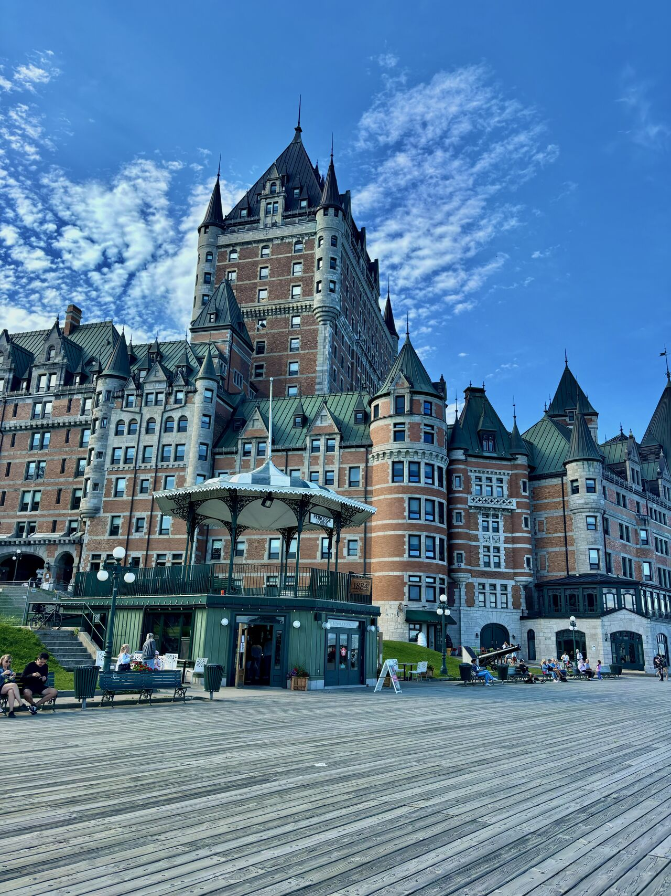
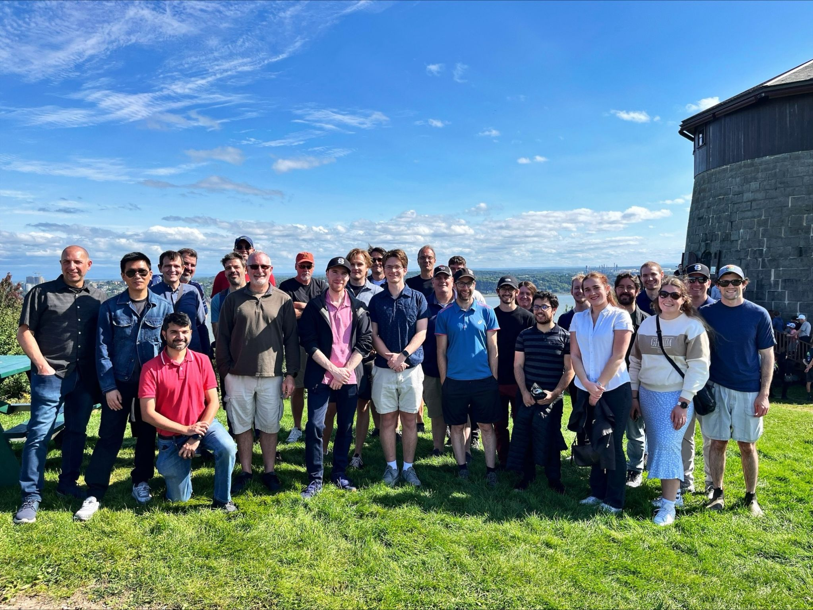
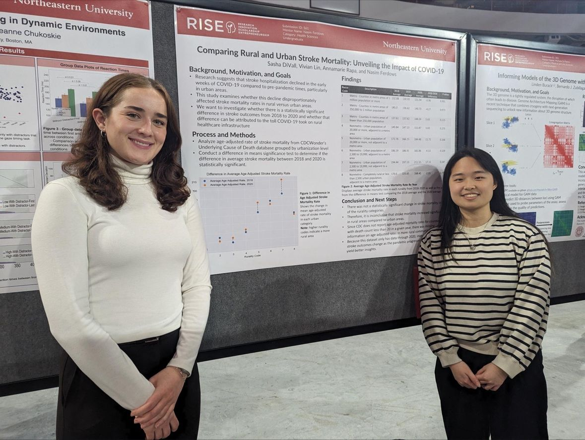

My Skills
- Programming Skills
- Technologies and Libraries
- Azure DevOps
- PyTorch
- SciKit Learn
- Concepts
- RAG-Based LLMs
- Convolutional Neural Networks
- Data Analysis

Le Chateau Frontenac, Quebec City, QC.
Taken on my trip to Quebec City with Bentley Systems.
Experience
- Applied AI Co-op, Bentley Systems
- Teaching Assistant, Khoury College of Computer Sciences
- Jan 2023 - Jun 2024
- Lead TA for CS2500, Fundamentals of Computer Science I
- Server, Corinthian Yacht Club

Plains of Abraham, Quebec City, QC.
The OpenSite+ team visiting the Plains of Abraham.
Research
- An Analysis Into the AI Curricula of Boston Universities and Colleges
- Jan 2025 - Present
- Uses LLM technologies to comparitively evaluate the points of emphasis
of Introductory AI courses offered at the undergraduate level across
10 colleges and universities in Boston, MA.
-
To be presented at RISE2025.
- Rural vs. Urban Stroke Mortality
- Jan 2023 - Sept 2024
- Investigated the statistical significance of differences in stroke mortality
between 2018-2021 across rural and urban counties in the United States.
- Presented at RISE2023,
RISE2024 and GSA2024

RISE2024, Matthews Arena
My partner and I presenting our poster at RISE2024, April 2024.